MAXimal
добавлено: 11 Jul 2008 19:33
редактировано: 8 Sep 2010 17:16
Содержание [скрыть]
Троичная сбалансированная система счисления
Троичная сбалансированная система счисления — это нестандартная позиционная система счисления.
Основание системы равно  , однако она отличается от обычной троичной системы тем, что
цифрами являются 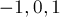. Поскольку использовать
, однако она отличается от обычной троичной системы тем, что
цифрами являются 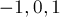. Поскольку использовать  для одной цифры очень
неудобно, то обычно принимают какое-то специальное обозначение. Условимся здесь обозначать минус единицу
буквой
для одной цифры очень
неудобно, то обычно принимают какое-то специальное обозначение. Условимся здесь обозначать минус единицу
буквой  .
.
Например, число  в
троичной сбалансированной системе записывается как 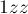, а число 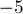 — как
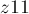. Троичная
сбалансированная система счисления позволяет записывать отрицательные числа без записи отдельного знака
"минус". Троичная сбалансированная система позволяет дробные числа (например, 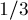
записывается как 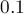).
в
троичной сбалансированной системе записывается как 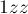, а число 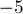 — как
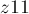. Троичная
сбалансированная система счисления позволяет записывать отрицательные числа без записи отдельного знака
"минус". Троичная сбалансированная система позволяет дробные числа (например, 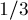
записывается как 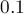).
Алгоритм перевода
Научимся переводить числа в троичную сбалансированную систему.
Для этого надо сначала перевести число в троичную систему.
Ясно, что теперь нам надо избавиться от цифр  , для чего заметим, что 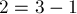,
т.е. мы можем заменить двойку в текущем разряде на , при этом увеличив следующий (т.е.
слева от него в естественной записи) разряд на
, для чего заметим, что 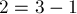,
т.е. мы можем заменить двойку в текущем разряде на , при этом увеличив следующий (т.е.
слева от него в естественной записи) разряд на  . Если мы будем двигаться по записи справа
налево и выполнять вышеописанную операцию (при этом в каких-то разрядах может происходить переполнение
больше , в таком
случае, естественно, "сбрасываем" лишние тройки в старший разряд), то придём к троичной сбалансированной
записи. Как нетрудно убедиться, то же самое правило верно и для дробных чисел.
. Если мы будем двигаться по записи справа
налево и выполнять вышеописанную операцию (при этом в каких-то разрядах может происходить переполнение
больше , в таком
случае, естественно, "сбрасываем" лишние тройки в старший разряд), то придём к троичной сбалансированной
записи. Как нетрудно убедиться, то же самое правило верно и для дробных чисел.
Более изящно вышеописанную процедуру можно описать так. Мы берём число в троичной системе счисления, прибавляем к нему бесконечное число , а затем от каждого разряда результата отнимаем единицу (уже безо всяких переносов).
Зная теперь алгоритм перевода из обычной троичной системы в сбалансированную, легко можно реализовать операции сложения, вычитания и деления — просто сводя их к соответствующим операциям над троичными несбалансированными числами.